Administering KEEN
KEEN Agent installation and operation
Chapter 25 of 27
Operate KEEN Agent and OTLP collectors

Diagram source (Mermaid)
flowchart TB
L["Selected log files or journal"] --> P["Parse and redact"]
P --> Q["Atomic local transaction: UUID, record and checkpoint"]
Q --> T["Send OTLP JSON over verified HTTPS"]
T --> A{"Valid scoped credential and batch?"}
A -->|Yes| D{"UUID already stored?"}
D -->|Same content| OK["Return success"]
D -->|New| S["Store artifact, event and mappings; commit"]
S --> OK
OK --> R["Remove acknowledged records from queue"]
A -->|Permanent rejection| H["Pause delivery; retain records"]
D -->|Conflicting content| H
T -->|Network error or retryable response| B["Back off and retry the same UUIDs"]
B --> T
KEEN Agent is a standalone Linux Go service that collects selected host logs and sends OTLP/HTTP JSON to KEEN. It enriches records with patching, HTTP, PHP and Linux Audit context. KEEN stores the events and their redacted artifacts, then applies the existing framework mapping rules.
Install the KEEN receiver
Apply the accompanying incremental patch to the KEEN platform tree, rebuild the API and UI, and run the normal Alembic database migration (alembic upgrade head inside the API service). Revision 0081_keen_agent adds agent identities. Keep the database backup and normal rollout procedure used by your installation. Existing ingesters remain available.
Open Admin → Integrations → Manage agents, register one identity per server, and save the one-time credential. Choose its expiry (1–365 days, default 90). No Fernet integration key is needed: the server stores only a SHA-256 hash of the randomly generated 256-bit credential. Outbound API integration credentials continue to use their existing encryption mechanism.
The standard reverse proxy endpoint is https://keen.example.org/api/v1/otlp/logs. Direct API deployments use /v1/otlp/logs. Ensure TLS terminates at a trusted reverse proxy. Agent ingestion and credential management are disabled when KEEN demo mode is enabled.
Build and install on a Linux server
KEEN Agent is maintained in its own repository. Prefer the package and installation instructions shipped with that release. Packaged binaries and vendor systemd units may use different paths from a manual build; remove a stale manually installed service override before switching installation methods. Keep the token, config and spool during an upgrade.
Use a maintained Go toolchain supporting Go 1.25 or newer. Dependencies are pinned in go.mod and go.sum.
cd keen-agent
make build
sudo useradd --system --home-dir /var/lib/keen-agent --shell /usr/sbin/nologin keen-agent
sudo install -m 0755 dist/keen-agent /usr/local/bin/keen-agent
sudo install -d -o root -g keen-agent -m 0750 /etc/keen-agent
sudo install -o root -g keen-agent -m 0640 examples/config.yaml /etc/keen-agent/config.yaml
sudo install -o root -g keen-agent -m 0640 /dev/null /etc/keen-agent/token
sudoedit /etc/keen-agent/config.yaml
sudoedit /etc/keen-agent/token
sudo install -m 0644 packaging/keen-agent.service /etc/systemd/system/keen-agent.service
Paste the issued credential into the token file as a single line. Adjust the endpoint and enable only sources that exist on the server. Do not put credentials in command-line arguments, YAML or shell history. On systems without useradd, create the equivalent system account through the operating system's account manager. Skip account creation if it already exists.
Grant the service account read access to selected logs. For journald, where the group exists:
sudo usermod -aG systemd-journal keen-agent
For files, use a dedicated log-reader group or narrowly scoped ACLs. Auditd commonly restricts both /var/log/audit traversal and the log file itself: configure its log_group and directory permissions according to local policy. Ensure logrotate/auditd rotation creates replacement files with the same read access. Avoid granting write access, CAP_AUDIT_CONTROL, or CAP_DAC_READ_SEARCH. The shipped service runs without capabilities; it does not need root when these permissions are configured.
sudo -u keen-agent /usr/local/bin/keen-agent -command check
sudo systemctl daemon-reload
sudo systemctl enable --now keen-agent
sudo journalctl -u keen-agent -f
sudo -u keen-agent /usr/local/bin/keen-agent -command status
check validates configuration, file permissions and CA loading. Collection permissions and connectivity are verified during normal operation and appear in source health. status reads the latest local report while the service is running. The service uses /var/lib/keen-agent with mode 0700 and reports health to KEEN approximately once a minute. Large or slow collections can delay reports. Restart after changing configuration or replacing a blocked/expired credential.
The systemd unit limits privileges, memory, process count and writable paths. Keep state_dir at its default unless you also update the unit's StateDirectory and ReadWritePaths. Test the unit against your distribution's security policy (including SELinux/AppArmor).
Configuration and log semantics
See examples/config.yaml for the complete configuration and commented source examples. Unknown YAML keys and unknown parsers are rejected. Configuration must be non-writable by group/others; credential files must also deny all access to others. Source paths are restricted to /var/log; symlinks in any path component and non-regular files are refused. Keep log directories and configuration owned by trusted administrators.
| Parser | Enrichment |
|---|---|
raw |
Original redacted text, collection time and source |
syslog |
RFC 5424/ISO timestamps; RFC 3164 host-local timestamp with year inference |
json |
Bounded top-level JSON fields; malformed JSON retained with a parse marker |
nginx |
Common access-log request path (without query), HTTP status; 5xx outcome |
php |
PHP fatal/parse error outcome; optional multiline grouping |
dpkg |
Timestamp, install/upgrade/remove/purge/status, package and available versions |
apt |
History transaction grouped from Start-Date to End-Date, package lists and requester |
dnf |
Recognized Installed/Upgraded/Removed/Erased/Downgraded messages; raw RPM/DNF messages retained |
auditd |
Group by audit timestamp/serial, record type, auid, syscall fields and success/failure |
Parsing is intentionally conservative. An unrecognized format remains evidence as redacted text. Dpkg and legacy syslog times use the agent host's timezone. Auditd records are grouped across reads and restarts, with interleaved IDs supported; an EOE record closes a group. Groups also close after three seconds without a new record or at the size limit and carry group_completion=timeout_or_size. Late records can therefore form another event. Raw grouped records preserve fields that repeat across audit record types; enrichment uses the first occurrence. Hex-encoded audit EXECVE/PROCTITLE values remain encoded. This release does not decode syscall numbers against architecture tables.
multiline_start groups file records until the next matching line or idle/size boundary. Journald uses its native message boundaries and durable cursors; auditd grouping and multiline options apply to file sources. A journal source's initial read uses initial_lookback. A newly discovered file starts at byte zero. Select paths carefully to avoid importing an unintended archive.
Delivery, rotation and retention
Events receive a random UUID before being durably queued. The event and its file offset/journal cursor are committed in one bbolt transaction with disk synchronization enabled. Pending multiline/audit groups are also persisted. After a successful receiver response, the acknowledged batch is removed. A crash before acknowledgement resends the same UUIDs; KEEN deduplicates by registered identity plus UUID and rejects conflicting content.
This provides at-least-once delivery for records durably collected, with server-side deduplication while their KEEN events remain retained. Source deletion, log rotation during a long outage, disk failure, explicit queue expiry or deleting KEEN evidence can affect these guarantees. Clearing the state directory or registering a new identity breaks continuity. Never copy one agent's state/credential to another server.
- Network errors, 408, 429 and server errors retry with exponential backoff and jitter, honoring Retry-After up to one hour. Redirects are refused and TLS certificates/hostnames are verified; there is no insecure TLS switch.
- Permanent client errors (including 400, 401, 403, 409, 413 and 415) pause delivery. Records remain queued, collection continues until capacity, and health reports show the pause. Fix the problem and restart the service. A partial-success response with rejected records also pauses delivery for review; the KEEN receiver itself uses whole-batch acceptance.
queue_mbbounds serialized queued payload and checkpoint bytes. Pending groups/checkpoints are additionally capped at a quarter of that budget or 16 MiB, whichever is smaller. At capacity, collection pauses without advancing the affected checkpoint. Database allocation adds overhead. bbolt reuses freed pages and retains its allocated high-water size; allow disk headroom above the payload limit. It is not a hard filesystem quota.retention_days: 0retains unsent records indefinitely. A positive value permits removal of records older than that many days since queueing. Removal increments the dropped/gap counter. Choose this only when the operational policy permits lost evidence.- File identity uses device/inode plus a prefix fingerprint. Configure both the live filename and uncompressed rotated files. Rename rotation is supported when the rotated file remains matched. Copy-truncate is detected when its size/prefix changes and increments the gap counter; a truncate-and-regrow race with an identical prefix cannot be reliably detected by polling.
- Compressed archives are not replayed. Set an uncompressed retention window longer than expected outages. A missing/vacuumed journal cursor reports an error; resolve journal retention or explicitly start a new source name with a chosen lookback, accepting possible replay.
- Lines over 60,000 bytes are consumed without unbounded allocation and counted as dropped. Incomplete lines wait for a newline. Source paths are capped at 256 matched files, each source at 32 pending groups, and retained checkpoints at 4,096. Reaching a checkpoint limit pauses new-file collection; inspect state/rotation policy before planning a fresh state directory and replay.
- Delivery batches records and retries failures with backoff. Filter high-volume access logs according to the evidence you need. Monitor queue growth and choose filters and retention appropriate to the expected event volume.
The status file and agent UI show queue bytes, record count, dropped/gap count, source errors, credential expiry and last contact. “Connected” means recent authenticated contact; inspect source status and queue growth to assess collection health. A quiet generic OTLP collector may have no recent contact because it does not send KEEN heartbeats.
Evidence and framework mapping
The server assigns source=keen-agent and binds system to the administrator-registered name. Client-supplied host names remain descriptive attributes and cannot replace that identity. Normalized payload includes source (configured log source), action, outcome, actor, raw, fields and the stable event ID. The artifact contains this normalized, redacted record; raw pointers include agent ID, event ID, receive time and the canonical received-record digest.
Use Admin → Evidence definitions to create rules against these fields, selecting the framework and controls appropriate to your organization. Useful criteria include source=keen-agent, action=package.upgrade, action=auditd.SYSCALL or action=http.request with outcome=failure. Parsed fields are available as structured-field conditions in the rule editor, alongside event fields and summary patterns. Validate them using KEEN's existing rule editor and test tools; rules are not automatically installed for an assumed framework version.
A recorded update demonstrates an observed maintenance action. A compliance claim about patch timeliness additionally needs asset scope, applicable requirements, deadlines and measurements. Host logs and heartbeats are claims from a credentialed collector; a compromised host can falsify them. Preserve independent corroboration where required.
Security and privacy
The agent has no inbound listener, remote command channel, plugin loading, template execution or shell-based parser. Its only child process is /usr/bin/journalctl with fixed arguments and validated unit names. Parsing uses bounded inputs and Go regular expressions. Install the binary, configuration, CA files, log directories and token under trusted ownership.
Default redaction covers common password/token assignments, bearer tokens and authentication/cookie headers. redact adds RE2 expressions, applied before the spool. KEEN applies its existing redaction and optional privacy masking again before evidence storage. These patterns cannot guarantee removal of every secret or personal datum: review actual source formats, minimize selected logs and add organization-specific rules. The private spool is not encrypted by the agent; use host disk encryption if required. Inbound agent tokens are hashed in Postgres, and the agent must retain its plaintext token in a protected file. KEEN's existing database/object-storage encryption policies govern received evidence.
Rotate through the UI, replace the host token atomically with its protected permissions, then restart. Revocation is permanent for the identity and takes effect after any already-running locked ingestion transaction completes. It preserves historical evidence. A token only authenticates log submission and heartbeat updates; it cannot read evidence, edit controls or administer KEEN.
OTLP interoperability
Fluent Bit’s OpenTelemetry output currently sends OTLP Protobuf, which this JSON receiver cannot accept directly. An OTLP-capable intermediary must export JSON, use the KEEN logs endpoint and bearer credential, and limit batches to 64 records and the receiver’s byte bounds. Verify exporter retry behaviour and stable record timestamps/identity before rollout. Prometheus metrics require a separate conversion into effectiveness-measure submissions; KEEN’s OTLP endpoint accepts logs only.
The receiver implements the logs signal over OTLP/HTTP JSON, at /v1/otlp/logs (or /api/v1/otlp/logs through the UI proxy). Protobuf, gRPC, traces and metrics are not implemented in this release. Standard collectors must select JSON and override their logs endpoint. KEEN-specific enrichment is optional; see examples/alloy.alloy.
KEEN Agent emits these optional log attributes:
| Attribute | Meaning |
|---|---|
keen.event.id |
Stable UUID; assigned once before queueing |
keen.source |
Configured log source name |
keen.action, keen.outcome, keen.actor |
Parsed activity |
keen.summary |
Bounded summary |
keen.field.* |
Additional parsed context |
Generic records use action=log.record, source=otlp within their normalized payload, and a deterministic UUID derived from the authenticated identity and canonical record content. This deduplicates identical retries; identical records with the same timestamp/content also collapse. Supply a stable keen.event.id when distinct identical records must be preserved. Avoid changing resource/scope metadata during replay. The actual KEEN event source remains keen-agent for both senders.
Receiver limits: 64 records/request; 1 MiB compressed and decompressed body; gzip or identity encoding; raw body 65,536 characters; 128 normalized fields, each value up to 4,096 characters and aggregate serialized fields up to 32 KiB. Timestamps must be timezone-aware via OTLP epoch nanoseconds, between year 2000 and five minutes into the future. Attribute nesting is limited to eight levels. Client enrichments beginning resource. or otel. are reserved. Rate limits are 60 log requests/minute per identity and 120/minute per observed client IP, plus separate heartbeat limits. Shared NAT/proxy deployments must account for the aggregate limit. The receiver fails closed if its rate-limit store is unavailable.
A successful response is {} after the complete batch commits. UUID conflicts return 409; invalid batches return 400; oversized requests 413; unsupported encodings 415. Server errors leave the transaction uncommitted for retry. An object-store write followed by database rollback can leave an unreferenced, redacted object. Each persistence attempt uses a fresh artifact key, so retries also work with write-once local storage and hosted S3 conditional writes. Configure operational cleanup for unreferenced objects in accordance with your retention policy; database rollback never deletes retained evidence objects.
Development and checks
make test
make release # Linux amd64 and arm64 binaries, with SHA256SUMS
Receiver tests are in keen/services/api/tests/test_keen_agent.py; run them with the API's dependencies and required test environment variables. They use SQLite with explicit transaction boundaries and mocked object storage/rate-limit decisions. Production PostgreSQL, Valkey, S3, reverse-proxy behavior and distribution-specific log permissions still require deployment validation. The included tests cover TLS/redirect protection, credentials, retries, queue atomicity, rotation, partial lines, audit grouping, redaction, batch rollback, format/body limits and deduplication.
Enrollment profiles for autoscaling fleets
Open Admin → KEEN Agents → Enrollment profiles. Create a profile for each cluster or environment. Choose the lifetime of the agent credentials, an optional enrollment expiry, an optional total enrollment limit, and optional allowed client CIDRs and fleet labels. KEEN shows the bootstrap key once. Store it in the fleet’s secret manager; KEEN stores its hash. Profile labels are assigned by KEEN when a machine enrolls.
Each enrollment creates an independent agent identity and token. The agent inventory identifies its enrollment profile. Individual servers can continue using Register a collector and administrator-managed credentials.
- Rotate bootstrap key replaces the fleet’s enrollment key. Existing agent credentials remain valid.
- Pause enrollment stops registrations. Existing agents can submit evidence and renew their credentials. Resume enrollment permits registrations again, subject to expiry and quota.
- Revoke profile and agents permanently disables the profile and all associated agents. Create a new profile to provision a replacement fleet. Existing evidence remains available.
- Revoke an agent disables that individual identity.
Profile expiry and enrollment limits apply to registration. Profile revocation also applies to ingestion and renewal. Revoking a compromised fleet’s bootstrap access requires revoking or rotating its key; an attacker who retains a valid reusable key can attempt new registrations.
Enrollment API for provisioning clients
Use verified HTTPS. POST to /api/v1/agents/enroll with the bootstrap key in the Authorization bearer header and JSON containing name and nonce. Generate the nonce from 32 cryptographically random bytes, encoded as unpadded URL-safe Base64 (43 characters). Persist it in a private file before sending the first request. Retrying the same name and nonce with the same bootstrap key recovers the same identity and token while that credential remains current and enrollment is allowed. Keep the nonce confidential and unique per machine. Avoid cloning it into images. Hostnames alone never recover credentials.
The response contains agent and token. Atomically save the token to the agent’s configured token file with restrictive permissions. Keep agent state across reboots. Machine names and client-supplied hardware details are claims; the bootstrap key authorises admission to the fleet. KEEN stores the profile relationship, enrollment address and server-assigned labels alongside the agent identity.
Credential renewal and recovery
Enrolled agents can POST to /api/v1/agents/renew using their current agent bearer token and a fresh private random nonce. Renew before the credential expires. Persist the renewal nonce before sending the request and atomically replace the token when the response arrives. The old token immediately loses ingestion access. For five minutes, the old token and exact renewal nonce can recover the same renewal response. A different nonce cannot use that old token. Administrator rotation clears this recovery window. Expired or revoked credentials require administrator intervention; clients must stop automatic enrollment fallback after an authentication rejection.
These APIs require enrollment-aware client support or provisioning automation. A collector configured only with a token file continues using that token until it is replaced. Check the deployed keen-agent version for enrollment support before relying on unattended renewal.
Network and secret handling
Restrict the enrollment endpoint at nginx, a load balancer or a private network. Prevent direct access around that restriction. Application-level CIDR checks use KEEN’s trusted-proxy configuration and ignore forwarded addresses from untrusted peers. Enrollment and renewal have fail-closed rate limits backed by Valkey; clients should honour Retry-After and use bounded retry delays.
Fetch bootstrap keys from a secret manager using the machine’s workload identity where available. Keep keys, nonces and operational tokens out of command-line arguments, images and logs. Removing a local bootstrap file does not remove copies held in user-data or provisioning logs. Use separate profiles to limit a leaked key’s reach. Keep private nonce and token files outside reusable machine images.
Agent heartbeat compatibility
The API accepts delivery counters from 0.1.1 onward while validating known fields. Restart API and worker services for mapping changes and rebuild the UI. Existing queues and checkpoints remain compatible.
Journal records include available service.name, process.name, process.pid, user.id, group.id, host.name and log.syslog.priority. Original metadata remains and is redacted before queuing. Known agent failures, cron command starts and SSH authentication results receive specific actions; unrecognized messages remain syslog.record. Old events can be matched using their original structured fields. Maintain and release keen-agent from its separate repository.
Filter before agent delivery
The agent supports include_when and exclude_when under each source. Each condition has field (a literal parsed field key), operator and value. Operators: equals, starts_with, contains, exists, in_cidr. Quote numeric values such as "404". By default each list uses OR: match any include condition if provided, then discard on any exclusion match. Missing fields do not match. Redaction precedes structured filtering. Excluded records advance checkpoints but never enter the queue; already queued events are unaffected.
Status and heartbeats report persistent filtered_by_source counters for structured filters, separately from rejected records. Raw regex filters are not included in those counters. Keep checkpoints when adjusting collection filters.
For agent exclusions, set exclude_match: all under the source to require all exclude_when conditions (AND). The default any uses OR. Empty exclusion lists discard nothing; missing fields prevent an AND exclusion. Include conditions remain OR. For example, client.ip in 192.0.2.0/24 AND status equals "200" discards only status 200 requests from that network.